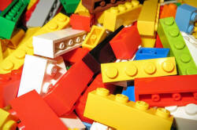

Unit 2: word (lexeme) class

This Unit is concerned with what most people call words.
There are 4 sections to this unit and here's the menu.
Clicking on the yellow arrow at the end of each section will return you
to this menu.
| Section | Looking at: |
| A | What is a word? How we decide what makes a word and the difference between word and lexeme. |
| B | Word classes How we classify words. |
| C | Morphemes How words are formed in English. |
| D | Word formation How we combine morphemes and other ways to make words. |
 |
Section A: What is a 'word'? |
This may seem a very simple question but it is difficult to define exactly what a word is.
The first task for you is to decide which of the following are really words.
- The European Union
- Mars
- washing machine
- happiness
- undoability
- colourlessness
- go on
- look forward to
When you have decided, click on
 to show the answer.
to show the answer.
The argument here is that all these may not be words but they are
all lexemes.
Not all of these will be found in a standard dictionary, of course,
but that doesn't stop them from carrying a single significance and
functioning as words in English. They all represent single
ideas or concepts but some contain two or three words.
If we add, for example
- hook, line and sinker
- a needle in a haystack
- the black sheep of the family
we then have single concepts represented by 4, 5 or 6 words.
It is for this reason, among others, that when we analyse words we
refer to lexemes or lexical items
which represent and are used as single concepts, no matter how many
words they contain.
For convenience, we refer to 'words' but we need always to bear in
mind that it is really lexemes that we are talking about.
Before we can consider what lexemes mean, we need to take a diversion to see how words are classified in English.

Section B: An introduction to word class
 |
Types of words |
In the Second Edition of the Oxford English Dictionary there are
entries for 171,476 words. Obviously, we need some way to make
sense of all that information.
Word class categories are one way we do that. You may have a
recollection of being told about parts of speech at
school and that is just another, slightly old fashioned, term for word class.
In this table there are two examples of each kind of word in English
(ten types in all). Can
you pair them up?
Click on the table when you think you have the answer.
Here is what we have:
- ability and flower
- these are nouns for an abstract idea and an object and nouns can
also be people, times, feelings and places
The child has ability
The flowers are gorgeous in spring
Other examples:
We met last week
(a noun phrase for a time containing an adjective, last)
Mary came home
(a proper noun for a person) - hopeful and blue
- these are adjectives telling us about a person, feeling or
thing
He's feeling hopeful (telling us about he)
The blue vase (telling us about the vase)
Other examples:
The glass is broken
(making an adjective from a verb)
He's a great friend
(telling us about the friendship rather than the friend, in fact) - happily and fast
- these are adverbs, showing how, where or when something is done or happened in, e.g.:
He agreed happily (how he agreed)
Jane drove fast (how she drove)
Other examples:
She arrived immediately (when she arrived)
They live there (where they live)
They can also tell us more about an adjective. For example:
That's very beautiful (emphasising the adjective)
they can also tell us about another adverb. For example:
He came extremely reluctantly - enjoy and go
- these are verbs which tell us about an action, state or
event.
I enjoyed the party (expressing a state of mind)
I go on Thursday (expressing an action of movement away)
Other examples:
The train leaves at 6
(expressing an event)
It's getting cold
(telling us about a change of state) - they and he
- these are pronouns. They function to stand for nouns so instead of
The man worked in the garden
we can say
He worked in it
with he standing for the man and it standing for the garden.
Other examples:
I gave it to him
(with two pronouns as the objects of the verb give)
Pass me that
The former is better - an and the
- these are articles (and the other one is a). They give
us information about the noun. For example:
I saw a car (any car)
I saw the car (a particular car) - by and out
- these are prepositions which tell us (usually) when or where a verb
refers to.
I'll arrive by 6
(expressing the connection between an action and the time)
They went out the window
(expressing the connection between an action and a direction)
Other examples:
She put the bags on the floor
(expressing the relationship between the action and the place)
The car was driven by the child
(expressing the relationship between the action and the person) - but and whereas
- these are conjunctions which serve to connect ideas.
I rang but she was out
(expressing a negative result)
He lives in London whereas his sister lives in Paris
(expressing a contrast)
Other examples:
They came at six and left much later
(linking two ideas in time)
He'll be here if his train's on time
(expressing a conditional event) - this and those
- these are demonstratives telling us about the number and
position of something (there are only two others: that
and these)
Those shirts are nice
(more than one thing far from the speaker)
This dress is beautiful
(one thing near to the speaker)
Other examples:
That dog is hungry
(one thing far from the speaker)
These apples are getting old
(more than one thing close to the speaker)
Demonstratives can also be pronouns as in, e.g.:
Pass me those - ah! and ouch!
- these are interjections. They carry little meaning in
themselves but they show the speaker's attitude. For
example:
Ah! I see (showing dawning comprehension)
Ouch! (expressing pain)
Interjections are a very minor word class and you'll see no more about them in this course.
 |
One more class |
There is another category of words not considered above because
it subsumes some of the traditional categories: determiners.
Determiners are words which modify nouns to tell us what we are
referring to. Determiners include:
- articles: a, the, an
- quantifiers: some, any, all, another, both etc.
- demonstratives: this, that, these, those
- possessives: my, our, his, her etc.
- interrogatives: whose, which, whatever etc.
There's a full list of determiners here.
 |
Putting words into classes |
Deciding which word belongs in which class is often quite simple
because most of us can recognise the meaning, for example, of:
jump
tree
carefully
blue
so we can work from the meaning to the word class. Verbs refer
to actions or states, nouns refer to things, adverbs refer to how,
when or where a verb is
done and adjectives describe nouns.
Unfortunately, this doesn't always work because we may encounter:
His third jump was better than his first
or
The dog treed the cat
in which the words have mysteriously slipped between classes.
At other times, we can look at a word and make a reasonable guess at
its class so, for example:
firstly
nation
hopeless
walking
are all identifiable as, respectively, an adverb, a noun, an
adjective and a verb because the final parts of the words (ly,
ion, less and ing) tell us
that.
Unfortunately this doesn't always work, either, because some words
do not have the helpful forms that these examples have:
furnishings is a noun but it looks like a verb
soon is an adverb but doesn't end in -ly
function can be a verb but it looks like a noun
handful looks like an adjective (compare helpful)
but is a noun.
 |
The slot test |
A better way of deciding in what class to categorise a word is
the
slot test.
For example, what sorts of words can go into the empty slots in
these sentences?
I hit the __________ with a __________
I __________ my head on the door
She has bought a __________ car
They came very __________
and if you try the test, you'll see that we need nouns (such as
nail and hammer), a verb (such as hit), an
adjective (such as new) and an adverb of some kind (such as
slowly, late or happily) to fill all the slots
successfully.
What you have done is use your knowledge of English syntax to figure
out word class. Cool.
 |
Two varieties of words |
This is not the place to explain in any detail the characteristics of each type of word class (for that, see Units 3 and 4 of this course) but there is one division that is very important.
- lexical or content words: these words carry meaning
even when they stand alone and include:
- adjectives such as blue, big, lonely, happy etc.
- verbs such as go, arrive, contemplate, type, think etc.
- nouns such as Monday, table, The President, army, fish, sugar etc.
- adverbs such as quickly, fast, slowly, often, alone, recently etc.
- function or grammar words: these words
carry no intrinsic meaning but make the grammar of the language
work and connect content words together. They include:
- pronouns such as he, she, it, they, mine, yours, one, everyone, nobody etc.
- conjunctions such as because, so, if, when, as, although etc.
- prepositions: to, by, with, in front of, against etc.
- determiners, including:
- articles (a, an, the)
- interrogatives (which, whose, what)
- demonstratives (this, that, these, those)
- quantifiers and distributives (some, lots of, each, both, many, few etc.)
- possessives (my, your, her, their etc.)
We can also use the slot test to work out what class a function
word is acting in so, for example, we know that filling the slots in
these sentences will tell us the word class of the lexeme we need:
I dropped the glass and __________ broke
I came home __________ fed the cat
I hit the nail __________ the hammer
She has bought __________ car
They gave __________ children some money
If you try to fill those gaps you will find that we need a
pronoun (such as it), a conjunction (such as and),
a preposition (such as with), a determiner (such as a,
the or that) and another determiner (such as the,
both, some or a few).
The first type (content words) are the subject of Unit 3 of this course and the second type (function words) are the subject of Unit 4.
 |
One more distinction |
A second division follows on from the first:
- open-class items
these classes of words (mostly lexical) are not limited. We can, and frequently do, invent new words as a glance at updated dictionaries will show. We also extend the meanings of current words into areas outside their traditional significance and/or word class. These include, for example:- verbs: to Google, to text, to livetweet etc.
- adjectives (and often, their derivable adverbs): cray (crazy), fratty (of behaviour typical of student fraternities), antivax (opposed to vaccinations)
- nouns: omnishambles (a situation in which everything has gone wrong), selfie, e-cigarette, Trumpisms etc.
- closed-class items
these are generally the grammatical or function words in the list above. It is vanishingly rare for languages to produce new pronouns, prepositions, conjunctions or determiners (although, for example, hizzer has been proposed as a gender-neutral determiner to substitute for his or her and the use of Ms. as an honorific to replace Miss or Mrs is widespread).
Words in this group can, however, become outdated and fall from use. Prepositions and adverbs such as yonder, betwixt, whence and whither are now rarely heard or seen, for example.
 |
Learn moreThe next two parts of this course (Unit 3 and Unit 4) are concerned with guides to the word classes. If you want to discover more now about types of words, go to: |
 |
Take a test |
To make sure you have understood so far, try
a test of your
knowledge of word class.
Use the 'Back' button to return when you have done that.

Section C: Morphemes
|  |
The building blocks of meaning and grammar |
A morpheme is usually defined as the smallest meaningful unit of language. Morphemes are the building blocks from which we make words and some of the grammar.
Here are some examples of the first two main types.
Type
1 morphemes are underlined in red, Type 2 morphemes are
in bold green.
Can you see the difference?
Click
 when you have an answer.
when you have an answer.
| boy | houses | smallish | keeper | window |
| cruiser | computer | glasses | washing | bombardment |
| unfortunate | disappearing | toasted | villainous | exceptional |
-
Type
1 morphemes can stand alone or form part of another word.
They are called free morphemes.
For example, the word small forms part of the word smallish but small is a word in its own right. The verb appear forms part of the word disappearing but can stand alone and have meaning. In our examples, the word boy can stand alone but also forms part of the adjective boyhood and window can stand alone or form part of a compound like window-shopping. - Type 2 morphemes cannot stand alone. The morpheme ing forms part of the word washing but standing alone it has no meaning. There are two morphemes at the end of the word exceptional (ion and al) and neither can stand alone meaningfully. These are called bound morphemes.
Some morphemes can be both free and bound depending on their
function. For example, In the clause
I was able to go
the morpheme able is functioning as a word in its own right
but in
believable
the morpheme able is bound and makes the word believe
into an adjective.
In this section, we will be dealing with bound morphemes. Free morphemes will be considered when we come to analysing words.
 |
Two sorts of bound morphemes |
Here are some examples of the two kinds of bound
morphemes to consider. Type
1 bound morphemes are underlined in red,
Type 2 bound morphemes are in bold green.
Can you see the difference?
Click
 when you have an answer.
when you have an answer.
| undo | doable | washing | decided | pleasure |
| requires | buses | opening | unpleasant | denationalisation |
- Type 1 bound morphemes
change the meaning of a word or make it a different kind of
word. For example:
Putting un in front of do makes the opposite.
Adding able to the verb do makes the word an adjective not a verb and so on.
In the word denationalisation, we have 4 type 1 bound morphemes: de (making the verb its reverse), al (making an adjective), ise (making a verb) ation (making a noun).
These are called derivational morphemes because we are deriving a new word from a base word in the way that we derive, e.g., the adjective hopeless from the noun hope. - Type 2 bound morphemes
change the word to conform with English grammar.
Adding s or es to a verb is what we do when we change the base form using he, she or it as in, e.g., I go – he goes, we like – she likes, they work – it works etc.
Adding ing to a verb makes the difference in meaning between I wash and I am washing.
Adding d or ed to a verb makes the past tense, changing I smoke to I smoked or she opens to she opened etc.
Adding es or s to a noun makes it a plural as in boy – boys, blush – blushes, computer – computers etc.
These are called inflexional morphemes because to inflect means to change the form of a word grammatically.
Notice here, too, that when we are talking about morphemes, spelling is not important. Change happy to happiness and you have to make a small adjustment to the spelling by changing the y to an i but that makes no difference to the analysis. We still have the base word, happy (a free morpheme), and the addition, ness (a bound morpheme). It also doesn't matter that ness can be a free morpheme (i.e., a word) meaning a headland – this is not what it means here.
Here's a graphical summary of all this:
|
|
Learn moreThe link here takes you away from the course to the in-service guide which has more detail than you probably need (yet). |
|
|
Take a test |
To make sure you have understood so far, try
a test of your
knowledge of morphemes.
Use the 'Back' button to return when you have done that.

Section D: Word formation
 |
Making new words |
Now that you know a little about morphemes, it's time to see how we can use them to make new meanings in English. Note, the in English there: languages around the world make new words in a bewildering number of ways. We focus here only on how English does this.
 |
Root and branch |
The first thing to do is distinguish between the root or base
word and the derivations that branch from it. Here's an
example of deriving words from the root word nation:
You can of course now recognise the morphemes in these words.
The root or base is also sometimes referred to as the stem.
 |
The three main ways to make new words |
Although there are other ways to make new words in English, we'll look only at the most important three.
Conversion |
This is the simplest way to make a new word but it is not always
obvious because there are no changes to the morphemes. The
most common way to do this is from nouns to verbs but there are other ways.
Here are some examples:
| The word ... | as in ... | can be converted to ... | by ... |
| clean (adjective) | It's a clean house | clean (verb) | by using it as a verb as in, e.g. Please clean it carefully. |
| bottle (noun) | It's a blue bottle | bottle (verb) | by using it as a verb as in, e.g. The vineyard bottles its own wine. |
| pocket (noun) | He put it in his pocket | pocket (verb) | by using it as a verb as in, e.g. He pocketed the money. |
| drive (verb) | He drove to my house | drive (noun) | by using it as a noun as in, e.g.: He walked up the drive |
| running (verb) | She is running | running (noun) | by using it as the object of a verb
as in, e.g.: She enjoys running |
| worn (verb) | I have worn this coat a lot | worn (adjective) | by using it to describe a noun as
in, e.g.: The carpet is very worn |
 |
Affixation |
To affix simply means to stick on and, as we saw with the example
using the root nation, above, English has a variety of ways to do
this with a variety of effects.
There are two primary terms:
- Prefixation refers to adding a morpheme to the beginning of a
word. For example:
Adding the prefix un- to many words results in the opposite or reversed meaning: unpleasant, unable, unforgiving, undo, unbutton etc. - Suffixation refers to adding a morpheme to the end of a
word. For example:
Adding the suffix -ment to the end of a word changes it into a noun: achievement, discernment, disappointment.
So what is the effect of prefixes usually and
what is the effect of suffixes usually?
Click
 when you have an answer.
when you have an answer.
- Prefixes usually change the meaning of a word.
- Suffixes usually change the function of a word.
That is not always the case.
Here's a brief task. Fill in the last column in your head and then click on the table for an answer.
 |
Compounding |
The final way to consider word building is to look at compounding.
This means adding words together to make new meanings. For
example:
Add house to keeper and you get housekeeper
Add play to mate and you get playmate
and so on.
Sometimes the words are joined together (dishwasher), sometimes they are
hyphenated (notice-board) and sometimes they remain separate
(cigarette lighter) but they are all treated as single ideas.
That means they are compound lexemes.
Here's another task. What sorts of words are being joined
here?
Fill in the last column in your head and then click on the table for
an answer.
There are two important things to know about compounds:
- True compounds usually take the stress on
the first syllable. For example, compare:
She lives in the green HOUSE on the corner
with
She is working with the plants in the GREENhouse - The meaning and the word class are usually
determined by the second part of the compound so, for example:
a doorman is a type of man, not a type of door
sky blue is a shade of blue, not a type of sky
windsurf is a type of surfing, not a type of wind
This means that English is right headed (or head final) but some languages are left headed (or head initial) and the system works the other way around.
 |
A revision task |
As a bit of revision, look at this table and see if you can:
- Identify the affixes
- Say what they do
The first row is done as an example.
When you have made a few notes, click on the table for the answers.

By the way, the word multinational can be used as a noun but that is not the function of the -al morpheme. It makes an adjective and then the adjective is used as a noun (by a process we saw above called conversion).
|
|
Learn moreBoth these links are to guides in the in-service section. |
|
|
Take a test |
To make sure you have understood so far, try
a test of your
knowledge of word formation.
Use the 'Back' button to return when you have done that.